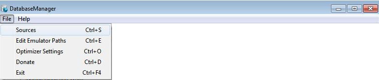
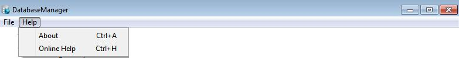

Menu
2 Main Menus:
File
Help

Contains
5 item:
Sources – Change
the folders DatabaseManager looks for games in. More
Edit
Emulator Paths – Any
games added that aren’t of platform PC are run through
emulators so you must specify the emulator path for each platform and
you can do so by clicking on this menu item
Optimizer
Settings – View
More
Donate – Give
money to the GameManager Project
Exit – Ends
Program
Help

Contains
2 items:
About – Tells you about
the program
Online Help – Brings up this online help